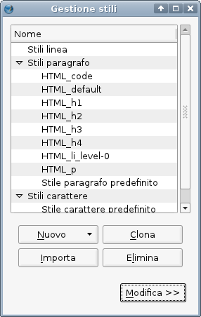
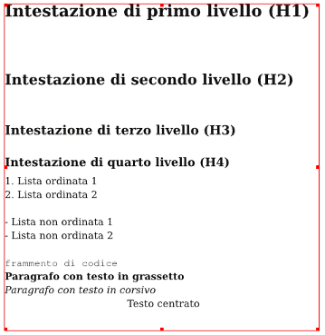

Scribus è dotato di un importatore HTML in grado di importare HTML “pulito” e ben formato, mantenendo buona parte dell'impaginazione e della formattazione, purché queste siano realizzate con HTML di base e con i marcatori HTML, non per mezzo di fogli di stile CSS. Scribus attualmente non è in grado di interpretare il CSS, ma questa capacità sarà aggiunta in futuro.
L'importatore crea degli stili di paragrafo corrispondenti alla struttura del documento definita dal codice HTML. Anche il testo grassetto, corsivo e a spaziatura costante viene riconosciuto. Ecco quali sono gli elementi HTML che vengono riconosciuti e importati (i marcatori possono essere sia in maiuscolo sia in minuscolo):
body, div, a - il testo deve essere compreso tra i marcatori <body>;p e br - corrispondono a interruzioni di paragrafo e di riga;H1 a H4 - corrispondono a intestazioni di dimensioni da 1 a 4;ol, ul, li - corrispondono a liste ordinate o non ordinate;pre e code - corrispondono al testo preformattato e al codice sorgente; vengono convertiti utilizzando il carattere Courier a spaziatura costante;b, u, i, em, strong, sub, sup, del, u - il testo formattato è convertito utilizzano i corrispondenti stili di carattere. Perché questo funzioni, il carattere predefinito in Scribus deve comprendere tutte le varianti necessarie.<?xml version="1.0" encoding="utf-8"?> <!DOCTYPE html PUBLIC "-//W3C//DTD XHTML 1.0 Transitional//EN" "http://www.w3.org/TR/xhtml1/DTD/xhtml1-transitional.dtd"> <html xmlns="http://www.w3.org/1999/xhtml"> <head> <title></title> <meta http-equiv="Content-Type" content="text/html; charset=utf-8" /> </head> <body> <h1>Intestazione di primo livello (H1)</h1> <h2>Intestazione di secondo livello (H2)</h2> <h3>Intestazione di terzo livello (H3)</h3> <h4>Intestazione di quarto livello (H4)</h4> <ol> <li>Lista ordinata 1 </li> <li>Lista ordinata 2 </li> </ol> <ul> <li>Lista non ordinata 1 </li> <li>Lista non ordinata 2 </li> </ul> <code>frammento di codice</code> <p><b>Paragrafo con testo in grassetto</b></p> <p><i>Paragrafo con testo in corsivo</i></p> <p align="center">Testo centrato</p> </body> </html>
Ecco gli stili generati con l'importazione del file:
|  |
Ecco il testo importato, così come appare nello spazio di lavoro di Scribus:
|  |
Non tutte le applicazioni esportano l'HTML rispettando fedelmente le specifiche tecniche del W3C. Potete utilizzare il programma htmltidy per “ripulire” e rendere conforme alle specifiche il testo HTML che desiderate importare. Vedi: http://w3c.org
Vedi anche: